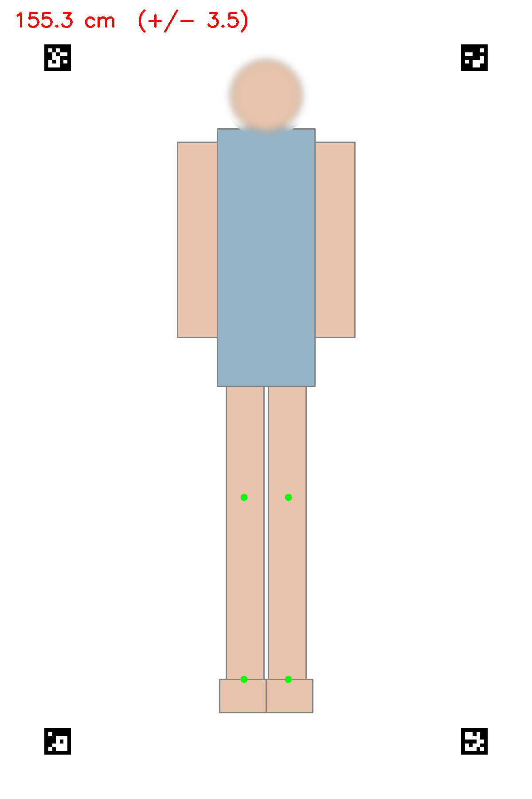
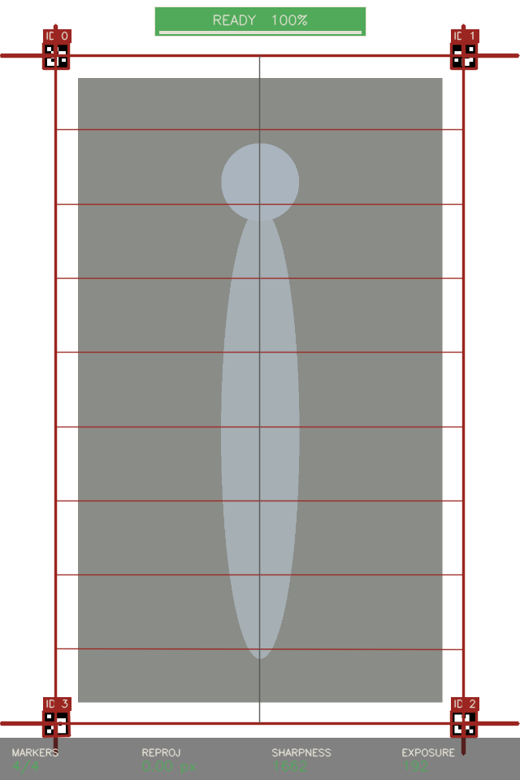

Computer-vision estimation of standing height from a single supine RGB capture.
| Project | anthroheight — supine height estimator (v1) |
| Document | User Manual |
| Version | 1.0 · first issue |
| Issue date | 27 April 2026 |
| Author | Hatayasit Aroonvanichporn (ggmr) · BART Lab |
| Status | For internal lab review |
| Reviewed by | __________________________________ |
The anthroheight system estimates a patient’s standing height (stature) from a single overhead RGB photograph taken while the patient lies supine. The intended users are clinical research staff and allied-health professionals at the BART Lab who routinely need height for patients who cannot stand on a stadiometer.
Stature drives several routine clinical calculations:
Direct stature measurement requires the patient to stand against a stadiometer. For patients with paralysis, severe contractures, advanced frailty, or neurodevelopmental disability that makes the procedure distressing, this is impractical or impossible. Existing surrogate methods (e.g. knee height with mechanical callipers, demispan with a flexible tape) require physical contact, user training, and a non-trivial measurement time per patient.
A nurse takes one overhead photograph of the patient lying on a marked bed mat; software returns an estimated standing height in centimetres, with its known statistical uncertainty.
The system reduces stature estimation to three image-processing problems chained into a single pipeline. Each stage has a plain-language description and a deeper technical box for readers with a biomedical-engineering background.
Figure 0. End-to-end processing pipeline. Each stage is a separate, independently testable Python module.
To convert pixels into millimetres the system needs a known-size object in the scene. Four black-and-white square patterns of known geometry are printed on the bed mat at fixed corner positions. The software locates these in the photograph and computes the geometric transformation from image pixels to bed-surface millimetres.
The four fiducials are ArUco markers from the DICT_5X5_50 dictionary, detected by OpenCV’s cv2.aruco.ArucoDetector with default sub-pixel corner refinement. The bed mat layout pins four marker IDs to known (x, y) coordinates in millimetres on the bed surface (e.g. ID 0 at the head-left corner, ID 2 at the foot-right corner of a 600 × 1800 mm rectangle).
Given the four detected pixel centroids and their known mm targets, the system solves for the planar projective transform Hpx→mm using cv2.findHomography with RANSAC (reprojection threshold 2 px). Bed-plane scale is derived from the edge length between two adjacent markers:
mm/px = ‖pmm,1 − pmm,2‖ ÷ ‖ppx,1 − ppx,2‖
Reprojection error (mean Euclidean residual after re-projecting source points through H) is reported in pixels and gates the QC stage; values above ~4 px indicate a wrinkled mat or a non-planar capture and trigger a re-shoot prompt.
The system needs to know the pixel coordinates of anatomical landmarks: knees, ankles, shoulders, hips, wrists, etc. A pre-trained machine-learning model returns 33 named landmarks per detected person.
Landmark detection uses Google’s MediaPipe Pose Landmarker (Tasks API, BlazePose-derived 33-keypoint model bundle pose_landmarker_lite.task, ~5.5 MB). The model is loaded once at first use and runs locally on CPU; no network call is made.
The 33-landmark output schema is the standard BlazePose topology (nose, eyes, ears, mouth corners, shoulders, elbows, wrists, hips, knees, ankles, heels, foot indices). The system uses only the landmarks needed by the chosen surrogate; the rest are still produced for downstream deformity-flag heuristics (e.g. shoulder-line tilt for scoliosis suspicion).
Each landmark carries a visibility score in [0, 1]. Landmarks below a 0.5 visibility threshold raise a low-confidence warning rather than silently propagating into the surrogate calculation.
The system does not take a head-to-foot pixel measurement and call that “height”. For any patient with kyphosis, scoliosis, contracture, or amputation, that head-to-foot distance is biased — sometimes by more than 10 cm. Instead, one well-defined skeletal segment is measured (e.g. knee height, demispan, ulna length) and substituted into a published regression that maps that segment to standing stature.
Three formulas are bundled in v1, selected by user-input clinical flags:
Chumlea (1985) — knee-to-ankle height, primary surrogate for elderly patients with vertebral height loss:
staturecm = a + b · KHcm + c · ageyr
with (a, b, c) tabulated by sex and ethnicity (e.g. white female: 84.88, 1.83, −0.24; SEE 3.5 cm). Validated 60–90 yr cohort.
Bassey (1986) — demispan (sternal notch to middle-fingertip), used when the knee cannot be flexed:
staturecm = a + b · DScm — female: 60.1 + 1.35·DS, SEE 4.0 cm
BAPEN MUST / NICE CG32 — ulna-length lookup tables, age-banded by sex; the most robust option for severely disabled patients.
The Standard Error of Estimate (SEE) of each formula is reported with every result — the residual standard deviation of stature predictions on the formula’s validation cohort, i.e. the “±” figure accompanying the height number. Skeletal-segment regression itself is the standard non-stadiometer technique in clinical nutrition (NICE CG32); anthroheight contributes the automated capture, calibration and segment measurement.
Initial deployment in a room takes approximately ten minutes. After that, every measurement is a single button click.
pip install -e . from the repository root. After installation no internet connection is required.From the project root, run streamlit run src/anthroheight/ui_streamlit.py. A browser tab opens at localhost:8501 showing the user interface. The application runs locally; no internet connection is required.
Patient ID, age (years), sex, ethnicity, and any applicable clinical flags. The flags drive automatic surrogate-formula selection: lower-limb contracture or amputation, for example, switches the recommended surrogate from knee height to ulna length.
Supine on the marked area, head at the IDs 0/1 end, arms by the sides. Verify that all four corner markers are unobstructed by linen or limbs. Reasonable, even overhead lighting is sufficient; avoid direct sunlight on the markers.
Select Camera (live CV) in the sidebar and start the live preview. The interface overlays real-time computer-vision feedback (see §6). When all four markers are detected and the QC indicators are green, either tap Snap now or hold steady for 1.5 s to trigger the auto-shutter. Within ~3 s the captured frame is annotated with the detected pose landmarks and shown for review.
The default surrogate is knee height (Chumlea 1985). For patients where knee height is unobtainable, select demispan (Bassey 1986) or ulna (BAPEN MUST tables) from the dropdown.
The estimated stature is displayed with its SEE. Pressing Save Measurement writes three artefacts to the patient’s folder under data/measurements/<patient_id>/: an annotated PNG (with the detected landmarks and a face-blurred patient image), a complete JSON measurement record, and an appended row in the master CSV log.
Each saved measurement produces an annotated PNG that records what the system computed. Figure 1 shows the annotated output for a synthetic preview patient.

The estimate appears as HHH.H cm (+/- SEE). The number after ± is the formula’s Standard Error of Estimate — the residual standard deviation of stature predictions on the formula’s validation cohort. A value of 155.3 ± 3.5 cm should be interpreted as: the patient’s true stadiometer height is most likely within ~3.5 cm of 155.3 cm. The metadata strip beneath the number lists the formula ID, surrogate name, and segment length used.
During capture the live video preview is annotated with real-time computer-vision feedback so the user can confirm system readiness before taking the shot. Figure 2 shows the live overlay layer rendered on a synthetic frame.

MARKERS, REPROJ, SHARPNESS, EXPOSURE. Green when in spec, amber otherwise.The system does not refuse to produce a number. It returns the estimate together with any quality flags raised during the pipeline; the user makes the final clinical judgement on whether to trust it.
Estimated stature outside 100–220 cm. Almost always indicates a misplaced landmark; re-shoot.
Two surrogates measured on the same patient differ by more than 5 cm. Investigate before trusting either.
Left/right paired measurements (e.g. left vs right knee height) differ by more than 2 cm. May reflect real anatomical asymmetry or a poorly detected landmark.
One or more required landmarks has visibility below 0.5. Often resolved by improving lighting or removing covering bedding.
Reprojection error > 4 px. Camera shifted, mat wrinkled, or one marker partially occluded. Re-flatten the mat and re-shoot.
Patient age is below or above the cohort the formula was validated on (Chumlea: 60–90 yr). Estimate is provided but extrapolated.
The system has clearly defined sweet-spots and equally clear limits. Read this section before using the result for any clinical purpose.
| Symptom | Action |
|---|---|
| Error: only N of expected markers visible; need ≥4 | One or more bed markers obstructed by linen, the patient’s arm, or a shadow. Uncover all four corners and re-shoot. If persistent, verify the mat geometry against the printed reference and ensure the camera frames all four IDs. |
| QC pill: EXPOSURE stays amber | Mean luminance is outside the [50, 220] band. Adjust room lighting; avoid direct sunlight or windowed reflections falling on the markers. |
| QC pill: SHARPNESS stays amber | Laplacian-variance sharpness below threshold. Wipe the lens, ensure the camera mount is rigid, and check that the patient is not moving during capture. |
| READY banner never goes green | One QC pill is amber. Check the live caption beneath the controls for which one (markers, reproj, sharpness, or exposure) is failing and address that condition. Manual Snap now always works as a fallback. |
| Estimated height is implausible (e.g. 80 cm for an adult) | One or more landmarks were placed in the wrong location. Inspect the green dots on the saved annotated PNG; if they are not on the correct joints, re-shoot with better lighting and remove any bedding covering the limb in question. |
| Application fails to start | From a terminal at the project root, run venv/bin/streamlit run src/anthroheight/ui_streamlit.py directly and capture the traceback. Send the screenshot to the developer (ggmr). |
| Need to inspect a past measurement | Open data/measurements/<patient_id>/. Each measurement is recorded as a timestamped PNG (annotated photo, face blurred), a JSON file (full pipeline record), and an appended row in the master CSV log. |
| Term | Meaning |
|---|---|
| Supine | Lying flat on the back, face up. The required patient position for capture. |
| Anthropometry | Quantitative measurement of human-body dimensions. anthroheight abbreviates “anthropometric height estimation”. |
| Stature | Standing height — the clinical target measurement. The quantity the system estimates from a supine capture. |
| Surrogate measurement | A skeletal-segment length (knee height, demispan, ulna) used as the input to a stature-prediction regression because it is invariant to spinal-curvature and contracture-related stature loss. |
| Knee height (Chumlea) | Heel-to-superior-patella distance with the knee flexed to 90°. Strongly correlated with stature; primary surrogate for the elderly with vertebral height loss. |
| Demispan (Bassey) | Sternal-notch to middle-fingertip distance with the arm extended laterally. Used when knee flexion is impossible. |
| Ulna length (BAPEN MUST) | Olecranon-to-styloid forearm length. Most robust surrogate for severely disabled patients; mapped to stature via age-banded lookup tables endorsed by NICE CG32. |
| ArUco marker | Square fiducial of known geometry from the OpenCV cv2.aruco library. Four are printed at known bed-plane coordinates to anchor the calibration homography. |
| Homography | The 3 × 3 planar projective transform that maps points on the bed surface (mm) to image pixels and back. Solved per-frame from the four detected marker centroids. |
| Pose landmark | A named, machine-detected anatomical point (e.g. left knee). 33 are returned per detected person by the MediaPipe model; the surrogate calculation uses the relevant subset. |
| SEE | Standard Error of Estimate — residual standard deviation of a regression’s stature predictions on its validation cohort. Reported alongside every result as the “±” figure. |
| Reprojection error | Mean Euclidean residual when source points are re-projected through the solved homography. Reported in pixels; gates the QC stage at 4 px. |
| [1] | Chumlea WC, Roche AF, Steinbaugh ML. Estimating stature from knee height for persons 60 to 90 years of age. Journal of the American Geriatrics Society. 1985; 33(2): 116–120. |
| [2] | Bassey EJ. Demi-span as a measure of skeletal size. Annals of Human Biology. 1986; 13(5): 499–502. |
| [3] | British Association for Parenteral and Enteral Nutrition (BAPEN). Malnutrition Universal Screening Tool (MUST) — height-from-ulna lookup tables. Endorsed by NICE Clinical Guideline 32. |
| [4] | National Institute for Health and Care Excellence. Clinical Guideline CG32: Nutrition support for adults. London: NICE; 2006 (updated 2017). |
| [5] | Garrido-Jurado S, et al. Automatic generation and detection of highly reliable fiducial markers under occlusion. Pattern Recognition. 2014; 47(6): 2280–2292. (ArUco fiducial markers, cv2.aruco.) |
| [6] | Bazarevsky V, et al. BlazePose: On-device Real-time Body Pose Tracking. arXiv:2006.10204; 2020. (MediaPipe Pose Landmarker model bundle.) |
| [7] | Bradski G. The OpenCV library. Dr. Dobb’s Journal of Software Tools; 2000. (Homography solve, cv2.findHomography; ArUco detector, cv2.aruco.ArucoDetector.) |
| [8] | Lugaresi C, et al. MediaPipe: A Framework for Building Perception Pipelines. arXiv:1906.08172; 2019. |
Development arc from project kickoff to the v1.0 first issue. Dated entries correspond to milestones discussed at internal lab progress reviews.
| Version | Date | Author | Change summary |
|---|---|---|---|
| 0.1 | 2026-03-09 | ggmr | Project kickoff. Design specification and 16-task implementation plan committed; brainstorming notes archived. Repository conventions (TDD, frequent commits, conventional-commit messages) established. |
| 0.2 | 2026-03-16 | ggmr | Package scaffold under src/anthroheight/. Pydantic v2 record schemas (PatientMetadata, CalibrationResult, Landmark, HeightEstimate, MeasurementRecord) with extra="forbid". |
| 0.3 | 2026-03-23 | ggmr | Surrogate formulas: Chumlea 1985 knee-height regression with sex / ethnicity coefficient table; Bassey 1986 demispan regression. Unit-tested against published worked examples. |
| 0.4 | 2026-03-30 | ggmr | BAPEN MUST ulna-length lookup tables with age-banded interpolator. Fix: exact-boundary inputs no longer trigger spurious “clamped” warnings. |
| 0.5 | 2026-04-06 | ggmr | Calibration: ArUco DICT_5X5_50 detection plus RANSAC bed-plane homography; reprojection error reported in pixels. Surrogate-segment math via homography transform of detected landmarks. |
| 0.6 | 2026-04-13 | ggmr | Pose / hand wrappers re-implemented against the MediaPipe Tasks API after the legacy solutions module was dropped in 0.10.18; legacy mock contract preserved via adapter classes. Capture QC gates (blur, exposure, marker count) added. |
| 0.7 | 2026-04-20 | ggmr | io_export module (face-blurred annotated PNG + JSON record + CSV log) and end-to-end pipeline orchestrator. Phantom-validation eval harness (eval/phantom_eval.py) added. Unit-test suite at 66 passing. |
| 0.8 | 2026-04-24 | ggmr | Streamlit user UI v1 (capture → flag review → surrogate selection → save). Cream / maroon theme tokens. Demo-mode toggle and synthetic-image fixtures for offline meeting demos. |
| 0.9 | 2026-04-26 | ggmr | UI refresh: AI-generated stylistic tells removed (uppercase eyebrows, decorative cards, dual fonts). Bed-mat marker sheet PDF published. Pre-meeting documentation pass. |
| 1.0 | 2026-04-27 | ggmr | First public issue. Live-CV user UI via streamlit-webrtc: per-frame ArUco detection, AR bed-plane wireframe, pose-skeleton overlay, QC strip and 1.5 s auto-shutter. User Manual v1.0 published as DOC-AH-UM-v1.0. |